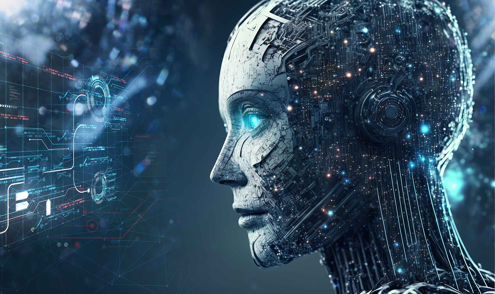
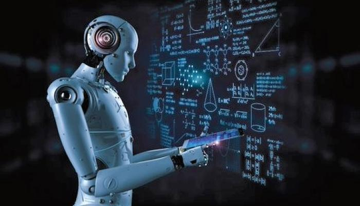
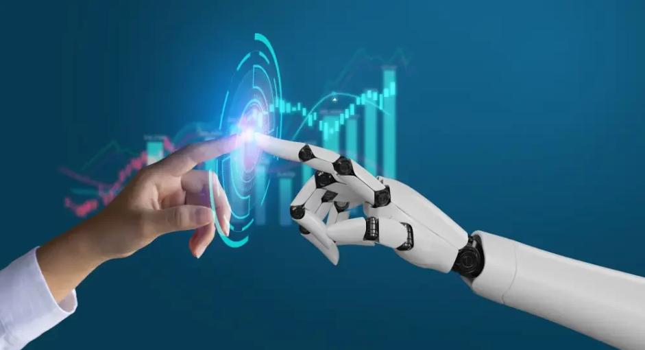

Introducción a la Inteligencia Artificial
La inteligencia artificial (IA) es un campo de la informática que se centra en la creación de sistemas y programas que pueden realizar tareas que normalmente requieren la inteligencia humana. Esto incluye funciones como el razonamiento, el aprendizaje, la percepción, la comprensión del lenguaje natural y la toma de decisiones. La IA busca imitar y, en algunos casos, superar la inteligencia humana en la ejecución de estas tareas.
A lo largo del tiempo, la inteligencia artificial ha experimentado un proceso de evolución y desarrollo significativo. Aquí hay una visión general de esta evolución:

-
Orígenes Teóricos (Décadas de 1940 y 1950):
La idea de máquinas inteligentes se originó en la década de 1940 con pioneros como Alan Turing. Turing propuso la "Máquina Universal" que sienta las bases de la computación y la IA. En la década de 1950, se llevaron a cabo los primeros experimentos en el campo.
-
La Era de la Lógica y el Razonamiento (Décadas de 1950 y 1960):
Durante este período, se desarrollaron sistemas de IA basados en la lógica y el razonamiento. Ejemplos notables son el "General Problem Solver" de Herbert Simon y Allen Newell y el programa "Logic Theorist" de Newell y Shaw.
-
La Época de la Inteligencia Simbólica (Décadas de 1960 y 1970):
Se enfatizó la representación del conocimiento mediante símbolos y reglas. Se desarrollaron sistemas expertos para el diagnóstico médico y otras aplicaciones.
-
Resurgimiento del Aprendizaje Automático (Décadas de 1980 y 1990):
Se produjo un cambio hacia el aprendizaje automático, que permitió a las máquinas aprender de datos en lugar de depender de una programación manual exhaustiva. Se desarrollaron algoritmos de aprendizaje automático, como redes neuronales y máquinas de vectores de soporte.
-
IA en la Vida Cotidiana (Década de 2000 en adelante):
La inteligencia artificial se ha vuelto omnipresente en la vida cotidiana. Ejemplos notables incluyen asistentes virtuales como Siri y Alexa, motores de recomendación en plataformas de transmisión, chatbots de atención al cliente, sistemas de visión por computadora en vehículos autónomos y mucho más.
Las aplicaciones actuales de la inteligencia artificial son diversas y abarcan campos como la medicina, la educación, el comercio electrónico, la robótica, la ciberseguridad y la atención médica. La IA también se utiliza en la toma de decisiones empresariales, en la automatización de procesos y en la optimización de la cadena de suministro. A medida que la tecnología continúa avanzando, es probable que la IA desempeñe un papel aún más prominente en nuestra vida cotidiana y en una amplia gama de industrias.
Tipos de Inteligencia Artificial
La inteligencia artificial (IA) se puede dividir en varios tipos o categorías según su nivel de habilidad y aplicaciones. Los dos tipos principales son la IA estrecha (también conocida como IA específica o "Weak AI") y la IA general (también llamada IA fuerte o "Strong AI"). Aquí están sus diferencias y ejemplos de uso:

-
IA Estrecha (Weak AI):
Definición: La IA estrecha se refiere a sistemas de inteligencia artificial diseñados para realizar tareas específicas y limitadas. Estos sistemas no poseen una comprensión genuina o autoconciencia y están restringidos a las tareas para las que fueron diseñados.
Ejemplos:
a. Reconocimiento de voz: Asistentes virtuales como Siri y Alexa pueden entender y responder a comandos de voz específicos, pero no comprenden el lenguaje como un humano.
b. Clasificación de imágenes: Las IA utilizadas en aplicaciones de clasificación de fotos pueden identificar objetos en imágenes, pero no tienen una comprensión real de lo que están viendo.
c. Juegos: Programas de IA diseñados para jugar al ajedrez, como Deep Blue de IBM, son expertos en ese juego, pero no pueden jugar a otro juego de manera efectiva.
-
IA General (Strong AI):
Definición: La IA general se refiere a sistemas de inteligencia artificial que tienen la capacidad de comprender, razonar y aprender en un sentido amplio, similar a la inteligencia humana. Estos sistemas pueden adaptarse a diversas tareas y aprender de manera autónoma.
Ejemplos (Aún en Desarrollo):
a. Humanos Virtuales: Los humanos virtuales o agentes inteligentes con IA general podrían llevar a cabo conversaciones significativas, aprender de la experiencia y realizar tareas cognitivas complejas.
b. IA Consciente: Aunque la IA consciente aún es principalmente teórica, se refiere a sistemas que tienen una autoconciencia similar a la humana.
-
Diferencias clave:
Capacidad de Tareas: La principal diferencia radica en la capacidad de realizar tareas. La IA estrecha está diseñada para tareas específicas, mientras que la IA general tiene un rango más amplio de aplicaciones.
Autoaprendizaje: La IA estrecha se programa para realizar una tarea particular y no puede aprender más allá de eso. En contraste, la IA general tiene la capacidad de aprender y adaptarse.
Conciencia y Comprender: La IA general tendría la capacidad de comprender y razonar sobre la información, mientras que la IA estrecha solo opera según sus algoritmos predefinidos.
Ejemplos Prácticos: La IA estrecha es común en aplicaciones cotidianas como asistentes virtuales y sistemas de recomendación. La IA general, aunque un tema de ciencia ficción, se utilizaría en aplicaciones altamente complejas y diversas, como conversaciones verdaderamente inteligentes y resolución de problemas multifacéticos.
En la actualidad, la mayoría de las aplicaciones de IA son de tipo estrecho debido a las limitaciones tecnológicas, pero la investigación continúa hacia la creación de sistemas de IA general más avanzados.
Aplicaciones de la Inteligencia Artificial

-
Chatbots
Los chatbots son programas de IA que pueden interactuar con usuarios en línea para responder preguntas, brindar asistencia o realizar tareas específicas en aplicaciones de mensajería, sitios web y más.
-
Asistentes Virtuales
Los asistentes virtuales como Siri, Alexa y Google Assistant utilizan IA para realizar tareas como responder preguntas, configurar alarmas, controlar dispositivos inteligentes y proporcionar información personalizada.
-
Reconocimiento Facial
Los sistemas de reconocimiento facial basados en IA se utilizan en seguridad, desbloqueo de dispositivos móviles, etiquetado de fotos y sistemas de identificación en tiempo real.
-
Coches Autónomos
Los vehículos autónomos emplean sistemas de IA para navegar de manera segura y realizar tareas de conducción, como controlar la velocidad, mantener el carril y evitar obstáculos, sin la intervención del conductor.
-
Recomendaciones de Contenido
Plataformas de streaming, redes sociales y sitios de comercio electrónico utilizan sistemas de recomendación basados en IA para ofrecer contenido personalizado, como películas, música, productos y conexiones sociales.
-
Procesamiento de Lenguaje Natural
Las aplicaciones de procesamiento de lenguaje natural (NLP) emplean IA para realizar tareas como traducción automática, análisis de sentimientos, generación de texto y chatbots conversacionales.
-
Diagnóstico Médico
La IA se utiliza en aplicaciones médicas para analizar imágenes médicas, como radiografías y resonancias magnéticas, y ayudar en el diagnóstico de enfermedades y afecciones.
-
Automatización de Tareas Rutinarias
En entornos empresariales y domésticos, la IA se utiliza para automatizar tareas repetitivas, como el procesamiento de datos, la clasificación de correos electrónicos y la gestión de inventarios.